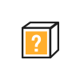

1회기 자녀 이해하기
2회기 자녀의 자율성 키우기
3회기 자녀와 갈등 해결하기
4회기 자녀의 힘을 북돋우기
3회기 자녀와 갈등 해결하기
- 시작
하기 - 첫째
워밍업 - 둘째
갈등상황 - 셋째
갈등이해 - 넷째
갈등해결 - 정리
하기
2단계 방법찾기
문제가 무엇인지, 서로의 입장이 어떠한지에 대해서 충분히 이야기를 나눈 후에는 어떤 해결방안이 있는지 찾아보는 시간을 갖습니다.
브레인스토밍
활용하기
활용하기
브레인스토밍의 원칙은 떠오르는 생각들을 평가나 비판 없이 모두 수용하는 것입니다. 아이의 이야기를 충분히 끌어내고 무시하거나 평가절하 하지 않고 수용하는 태도가 중요합니다.
3단계 약속하기에서 하나씩 검토해 보기 위해 2단계에서 나온 다양한 방법들은 모두 기록해둡니다.

예시아이가 적극적이지 않을 때 부모는 2단계 방법찾기에서 해결방안을 찾길 바라지만, 아이가 소극적으로 대응할 수도 있습니다. 자녀의 적극성이 발휘되지 않는다는 것은 1단계 이해하기가 충분히 되지 않았다는 증거이기도 하죠. 그렇다면 ‘1단계 이해하기’로 다시 되돌아가는 것이 좋습니다.
자녀와 밀고 당기기는 완수되어야 할 과업이나 성취해야 할 고지가 아닙니다. 혹시 과업이나 성취로 생각하면서 자기 뜻대로 되지 않는 것을 못 견디지는 않는지 점검해볼 필요가 있습니다.